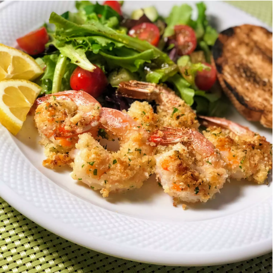

Garlic parmesan Shrimp
Ingredients
- nonstick cooking spray
- 1 cup dry bread crumbs
- 1 cup shredded Parmesan cheese
- 2 tablespoons dried parsley
- 1 ½ teaspoons garlic powder
- 1 pound large shrimp
- 2 tablespoons butter
Directions
- Preheat the oven to 350 degrees F (175 degrees C). Spray a 9x13-inch glass casserole dish with nonstick cooking spray.
- Combine bread crumbs
- Lay shrimp flat in the prepared baking dish. Sprinkle with any bread crumb mixture remaining in the bag. Drizzle melted butter over the top.
- Bake in the preheated oven until starting to crisp